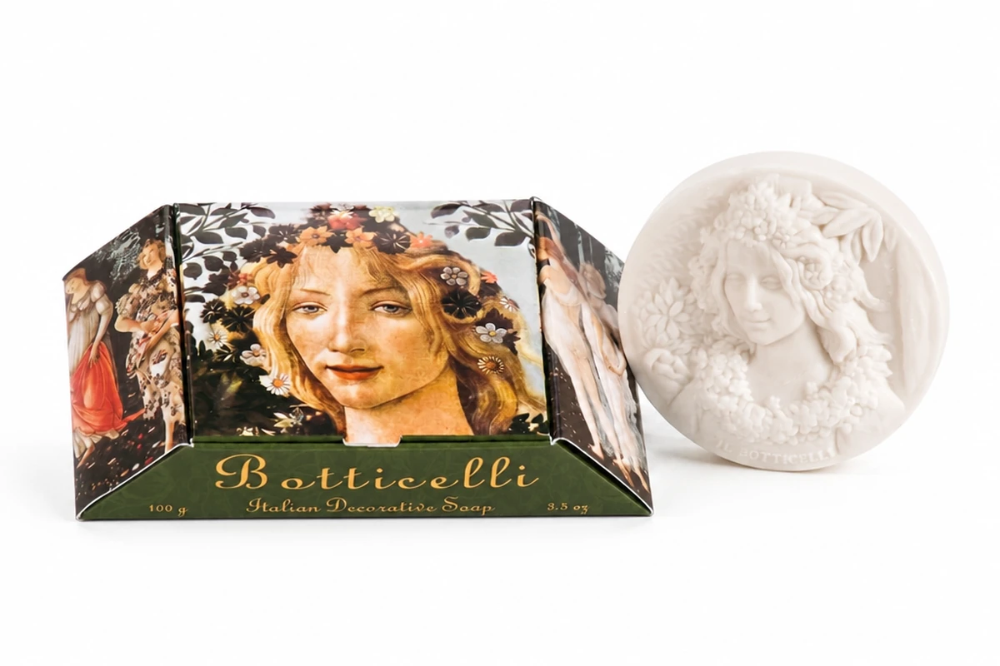

Il volto della Primavera, scolpito nel sapone.
Un omaggio al Rinascimento fiorentino: l'eleganza di un capolavoro portata sulla pelle, in un bassorilievo bianco da custodire come un piccolo quadro.
Il sapone prende nome e volto dal capolavoro custodito agli Uffizi, l'opera che ha definito l'idea stessa di bellezza rinascimentale. Sul bassorilievo bianco rivive la grazia di un volto incorniciato di fiori, scolpito linea dopo linea.
Non è una semplice decorazione: è un piccolo omaggio all'arte italiana, pensato per essere usato con lentezza o, semplicemente, esposto come si terrebbe una stampa d'autore.
Profumatissimo, come tutta la collezione. Un profumo intenso e avvolgente che continua a vivere nel cassetto, sulla biancheria, nella stanza, molto dopo l'ultimo gesto.
La confezione riproduce il dipinto da cui il sapone prende vita: un oggetto bello già prima di essere aperto, perfetto da regalare. Anche la scatola fa parte dell'opera.
Si regala un sapone, si dona un'emozione.
Profuma una casa, accoglie chi entra, custodisce un ricordo: un regalo che resta molto dopo il momento in cui è stato donato.
Scrivici